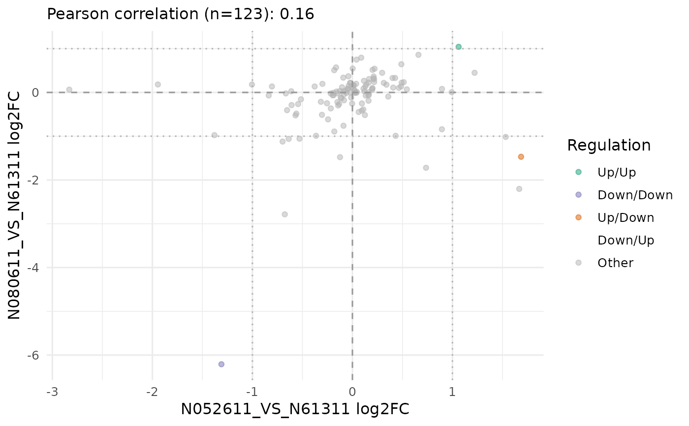

Fold-change scatterplot between two comparisons
get_foldchange_scatter.RdPlots log2 fold changes from two stored comparisons against each other, with
points coloured by concordant/discordant regulation based on the cutoffs
saved in the VISTA object.
Usage
get_foldchange_scatter(
x,
sample_comparisons,
label_n = 0,
alpha = 0.5,
geometry = c("point", "hex"),
method = c("pearson", "spearman"),
colors = c(`Up/Up` = "#1b9e77", `Down/Down` = "#7570b3", `Up/Down` = "#d95f02",
`Down/Up` = "#e7298a", Other = "grey70"),
point_size = 1.5,
label_size = 3,
base_size = 12
)Arguments
- x
A
VISTAobject containing DE results.- sample_comparisons
Character vector of length 2 naming the comparisons.
- label_n
Integer; number of most extreme points to label (by |log2FC1| + |log2FC2|).
- alpha
Point transparency.
- geometry
Geometry used for the data layer:
"point"or"hex".- method
Correlation method for the subtitle;
"pearson"or"spearman".- colors
Named vector of concordance colours.
- point_size
Point size used when
geometry = "point".- label_size
Text size for labeled genes.
- base_size
Base theme size.
Details
Points are coloured by concordance status using fixed colours:
Up/Up =
#1b9e77Down/Down =
#7570b3Up/Down =
#d95f02Down/Up =
#e7298aOther =
grey70
Regulation is derived from the log2fc and pval cutoffs stored in
cutoffs(x) (and p_value_type from the same list, defaulting to "padj").
Examples
data('count_data', package = 'VISTA')
data('sample_metadata', package = 'VISTA')
cell_levels <- unique(sample_metadata$cell)
if (length(cell_levels) >= 3) {
v <- create_vista(count_data[1:150, ], sample_metadata, column_geneid = 'gene_id', group_column = 'cell',
group_numerator = cell_levels[2:3], group_denominator = rep(cell_levels[1], 2),
min_counts = 5, min_replicates = 1)
comp_names <- names(comparisons(v))[1:2]
p <- get_foldchange_scatter(v, sample_comparisons = comp_names)
print(p)
}
#> estimating size factors
#> estimating dispersions
#> gene-wise dispersion estimates
#> mean-dispersion relationship
#> final dispersion estimates
#> fitting model and testing
